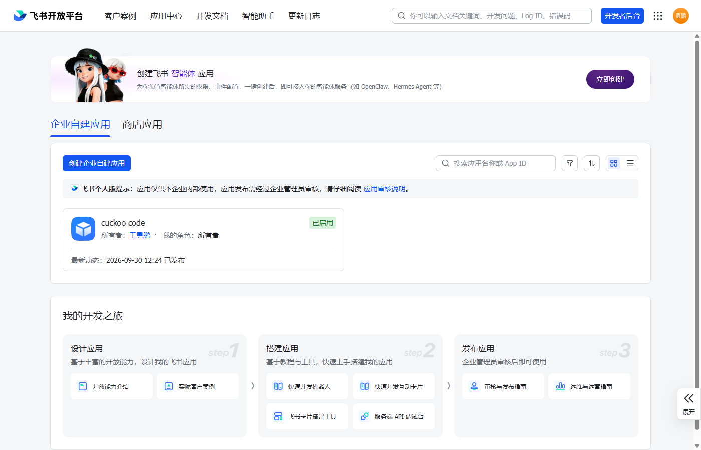
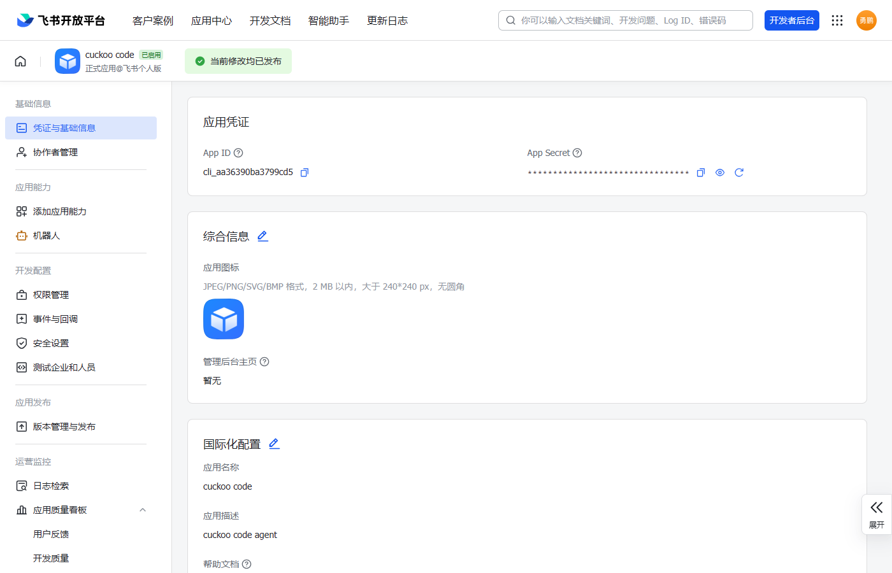
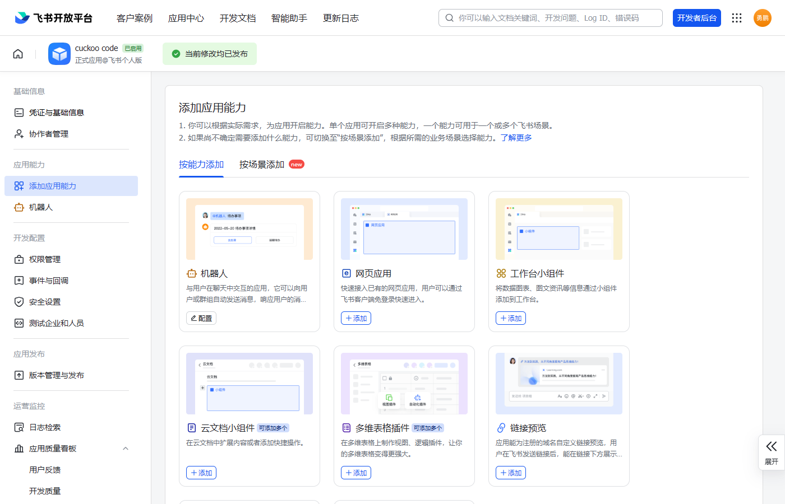
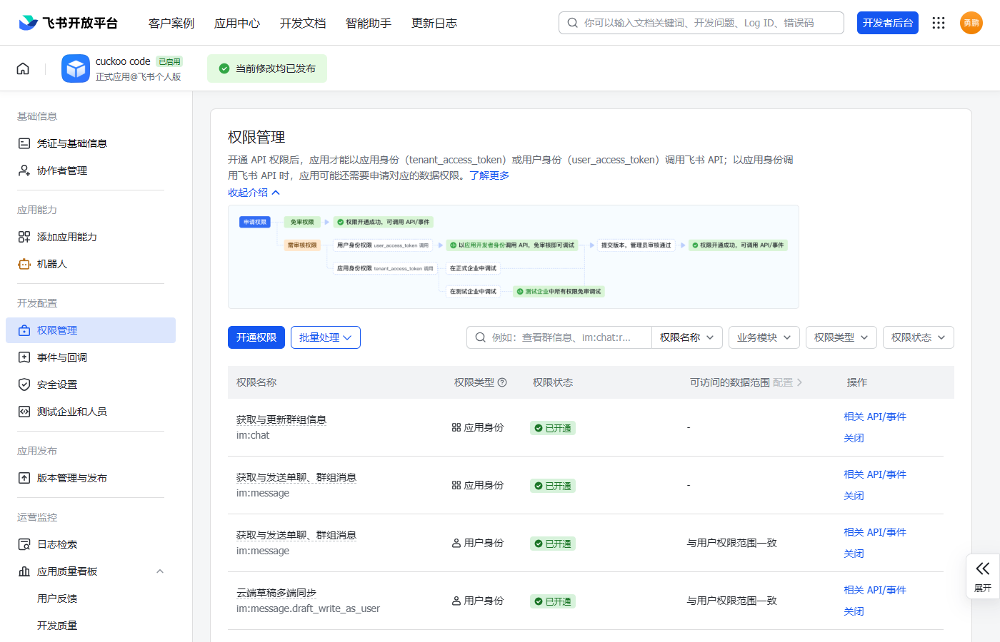
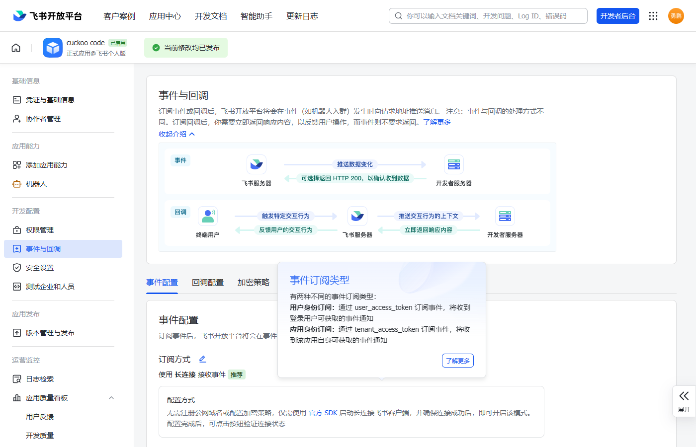
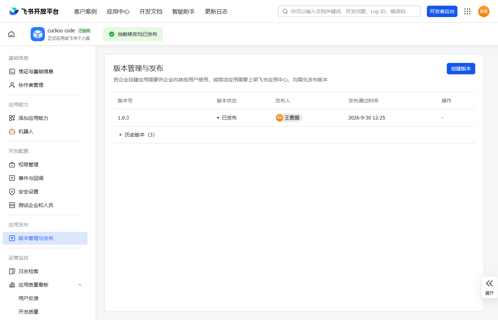

飞书同步配置教程
配置后，手机飞书就能收发 Cuckoo Code 的对话 · 全程约 10 分钟 · 免费
1注册飞书账号
- 打开 https://www.feishu.cn/ → 用手机号注册（免费）
- 注册时会让你创建一个组织/团队（随便起名，个人可用，不需企业认证）
2创建"企业自建应用"
- 打开 https://open.feishu.cn/app → 用刚注册的账号登录
- 点「创建企业自建应用」
- 填应用名称（如
Cuckoo）、图标随意 → 创建

3获取 App ID / App Secret
- 进入应用后，左侧点「凭证与基础信息」
- 复制这两个值（等下要填进 Cuckoo）：
- App ID（如
cli_xxxxxx）
- App Secret（点「查看」）

4添加"机器人"能力
- 左侧点「添加应用能力」
- 找到「机器人」→ 点「添加」

5开通权限
- 左侧点「权限管理」
- 搜索并开通以下权限：
im:message（获取与发送单聊、群组消息）im:message:send_as_bot（以应用身份发消息）im:message.p2p_msg:readonly（读取单聊消息）im:message.group_msg（读取群消息，用于接收群里所有消息）im:chat:readonly（查询机器人所在的群列表）

6配置事件订阅（关键！）
⚠️ 这是最容易漏的一步。配错会导致"能发不能收"，或飞书里没有输入框。
- 左侧点「事件与回调」→ 选「事件配置」
- 「订阅方式」→ 选「使用长连接接收事件」（不是"发送到开发者服务器"）→ 点「保存」
- 「已添加事件」→ 点「添加事件」→ 搜「接收消息」→ 添加
im.message.receive_v1

💡 长连接的好处：不需要公网 IP、不需要服务器，普通电脑直接可用。
7发布应用
- 左侧点「版本管理与发布」
- 点「创建版本」→ 填版本号（如
1.0.0）→「申请发布」
- 你是管理员 → 审批通过（秒过）

⚠️ 改了上面任何配置，都要重新「创建版本 + 发布」，否则不生效！
8在 Cuckoo 里填写凭证
- 回到 Cuckoo Code，点左侧活动栏的「飞书」图标（气泡）
- 填入 App ID 和 App Secret
- 打开「启用飞书同步」开关
- 点「保存并连接」
- 状态应变「已连接」（绿点）
9建群 + 绑定到窗口
⚠️ 每个窗口绑定一个飞书群，对话互不干扰。没绑群的窗口，飞书功能关闭。
- 打开飞书 App（手机/电脑）→ 新建一个群（如"Cuckoo 项目A"）
- 把机器人拉进这个群
- 回到 Cuckoo，在对应窗口里打开「飞书」页
- 点「刷新群列表」→ 在「飞书群」下拉里选中刚建的群 → 自动绑定
- 状态变「已绑定：xxx」即成功
💡 开多个窗口时，给每个窗口建一个不同的群，各绑各的，消息不会串。
在群里发消息（可直接发，无需 @ 机器人），就会送到绑定该群的窗口。
10完成！
| 操作 | 效果 |
|---|
| Cuckoo 里发消息 | 飞书收到「👤 我：xxx」 |
| AI 回复 | 飞书收到「🤖 AI：xxx」（纯对话） |
| AI 调用工具 | 飞书收到「🔧 调用中 / ✅ 完成」 |
| 在飞书群里发消息 | 发给绑定该群的窗口的 AI |
常见问题
Q：状态一直"连接中"？
检查 App ID / App Secret 是否正确；检查第 6 步「订阅方式」是否选了「使用长连接」。
Q：飞书收不到消息？
检查该窗口是否已绑定群；检查第 9 步机器人是否在群里；检查是否开了 im:message.group_msg 权限。
Q：多窗口消息串了？
每个窗口要绑定不同的群；一个群只能绑一个窗口。
Q：找不到机器人 / 没有输入框？
检查第 6 步「事件订阅」是否配了 im.message.receive_v1；检查第 7 步是否已发布；检查应用「可用范围」是否包含你自己。
Q：改了配置不生效？
必须重新创建版本 + 发布（第 7 步）。